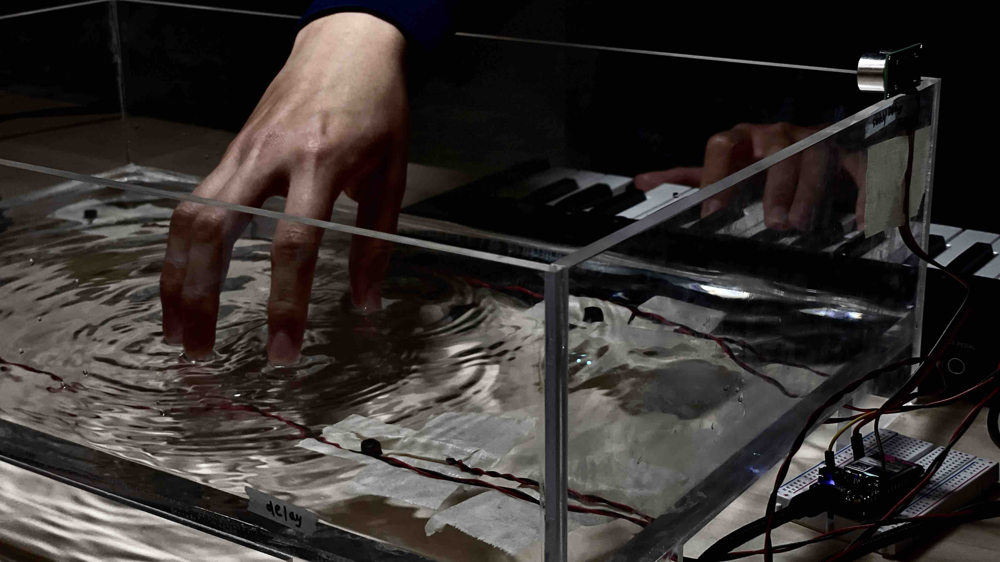

|
Project Info
Title: Field Resonance Type: Interactive installation / sound experiment Focus: Interactive media, musical interfaces, and experimental prototyping At A Glance
Alex Rowan Physical computing, interface prototyping, sound interaction 2025 Quick Links
|
Field ResonanceA tactile sound experiment that translates gesture, material response, and live performance into a compact portfolio story.  Overview
Field Resonance is included mainly to demonstrate the media system. Some projects need more than one image, and the template should support that without becoming difficult to maintain. This page uses the built-in gallery slider so the repository can act as a real starting point instead of a static screenshot bundle. Gallery
If a project has multiple key images, keep them in one section and let the slider handle the rest. That keeps the content files readable while still supporting richer project documentation. |